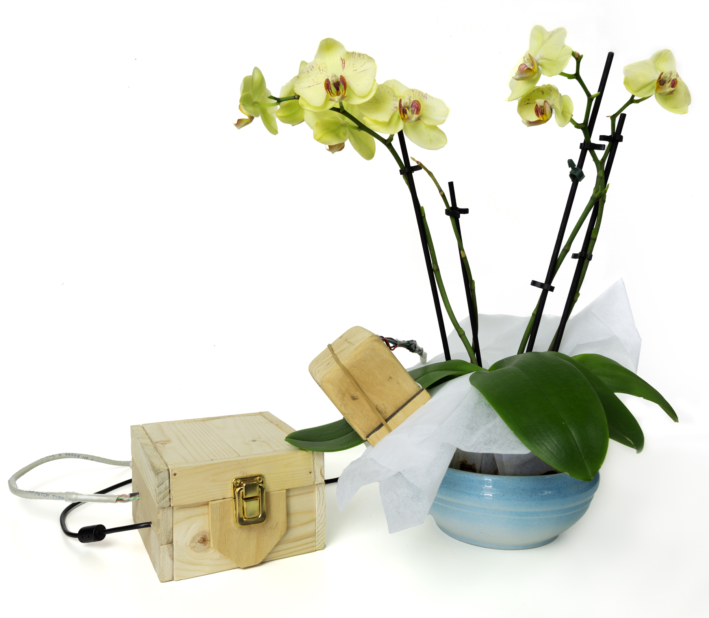
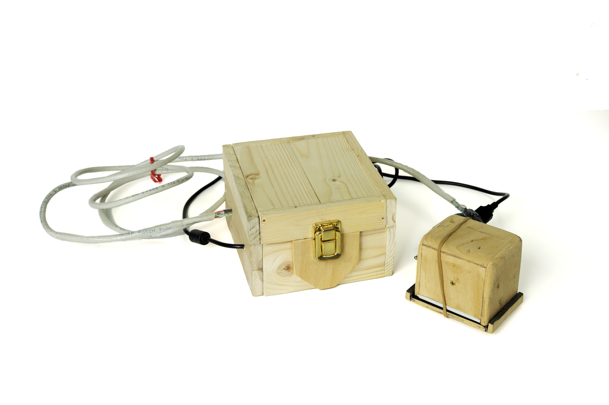
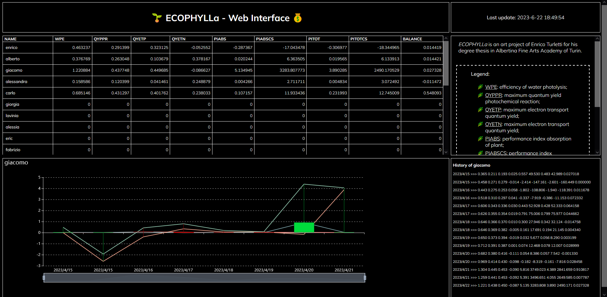

ECOPHYLLa
Uno spazio per l’incontro multispecie
[2023 - in corso]

«Ciò che non può esser commercializzato è destinato a sparire. Fra poco le relazioni interpersonali non si potranno tenere al di fuori di spazi mercantili.»
- Nicolas Bourriaud, Estetica relazionale
Descrizione
Con il progetto intitolato ECOPHYLLa propongo l’adozione di una economia fondata sulla cooperazione tra umano e pianta, in cui il valore della moneta rappresenta il benessere delle piante.
Ogni partecipante dovrà scegliere una pianta di cui prendersi cura. Attraverso il costante monitoraggio della sua salute, avrà la possibilità di ottenere e accumulare delle ricompense.
Il monitoraggio avviene con l’utilizzo di un fluorimetro, uno strumento che consente di conoscere la salute della pianta osservando l’emissione della fluorescenza da parte della clorofilla a durante il processo di fotosintesi. A seconda dei risultati ottenuti, verrà stabilito il valore della ricompensa o della sanzione da attribuire al partecipante. Il valore della ricompensa sarà inoltre influenzato dai risultati ottenuti dai partecipanti vicini.
Fluorimetro
Qualche foto del prototipo a cui sono giunto per la costruzione del fluorimetro di ECOPHYLLa.
Il fluorimetro è composto di due parti: la sede logica contenuta all’interno della scatola (foto n. 1) e la sonda da posizionare sopra le foglie delle piante (foto n. 2).
Ho provato a ricreare un sistema di misurazione diretta dell’emissione di fluorescenza da parte della clorofilla a durante la fotosintesi, producendo dati che consentissero di ottenere il transient Ojip tramite cui calcolare informazioni su come avviene il processo di fotosintesi nella pianta, come la massima efficienza di fotolisi dell’acqua, la resa quantica delle reazioni fotochimiche primarie, la resa quantica massima per il trasporto degli elettroni oppure la capacità potenziale per la conservazione dell’energia dei fotoni assorbiti.
Queste informazioni servono per determinare il valore della ricompensa o sanzione da attribuire al partecipante. Ovviamente il lavoro non ha alcuna pretesa di rigore scientifico ed è stato svolto con un fare speculativo e con lo scopo di presentare la mia proposta artistica.

Interfaccia web
L’interfaccia web consente ai partecipanti di poter visualizzare il saldo, le statistiche e l’andamento storico propri e di tutti gli altri partecipanti della comunità.
L’applicazione backend di ECOPHYLLa preleva i dati dal database e genera una pagina HTML formata da una tabella in cui in ogni riga vengono riportate le informazioni di ogni singolo partecipante: la media delle sue statistiche e il suo saldo.
Facendo click sul nome del partecipante è possibile accedere a una visualizzazione più approfondita dello storico del partecipante. Vengono infatti aperte due ulteriori sezioni che mostrano un grafico a candele, che presenta l’andamento economico del partecipante nel corso del tempo, e l’elenco di tutti i punteggi ottenuti in ogni misurazione effettuata, con indicato se i punteggi hanno condotto a una ricompensa oppure a una sanzione.
La pagina web si aggiorna automaticamente ogni 5 minuti e l’orario dell’ultimo aggiornamento effettuato è sempre mostrato nell’angolo in alto a destra.
